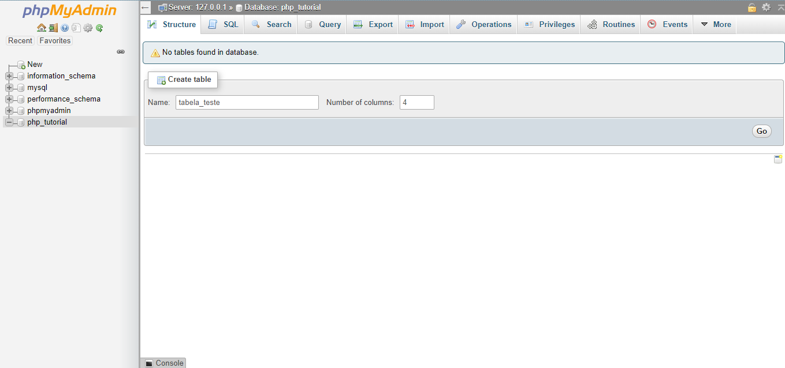

phpMyAdmin
O phpMyAdmin é um ótimo painel escrito em PHP para você checar os dados de bancos de dados MySQL existentes e criar novos dados, ele é ótimos para utilizarmos enquanto estamos desenvolvendo.
Caso você tenha instalado o XAMPP com as opções que deixei no screenshot a seguir:

Você conseguirá acessá-lo no endereço http://localhost/phpmyadmin, o username padrão é "root", o campo senha você pode deixar vazio, como na imagem a seguir:

Caso tenha ocorrido tudo certo, você irá estar em uma tela igual essa:

Para começar, precisamos criar um banco de dados, para isso, clique em New na lateral esquerda, você irá estar em uma tela igual essa:

Ali no campo de texto abaixo de Create database, digite php_tutorial, esse será o nome do nosso banco de dados, e clique em Create, você irá cair em uma tela igual essa:

Agora criaremos uma tabela, ali no primeira campo de texto, coloque tabela_teste, o número de colunas pode ser 4 mesmo, então clique em Go, você irá cair uma tela igual a seguir, preencha com os seguintes dados:

Assim dizemos que criaremos uma coluna chamada id do int, ou seja, ela receberá apenas números inteiros (integers), marcaremos também o checkbox A_I, auto increment, isso significa que não precisamos preenchê-lo manualmente, pois a cada novo registro ele aumentará em 1 automaticamente nunca se repetindo, isso também marcará o índice PRIMARY, indicando ser a chave primária da tabela.
Também criaremos uma coluna nome e outra sobrenome, do tipo VARCHAR (aceita qualquer caractere) com limite de 255 caracteres, e outra coluna chamada idade, que também receberá apenas números inteiros.
Após isso, clique em Save, você irá chegar em uma tela igual a seguinte, mostrando os dados da estrutura da tabela:

Você pode inserir dados pelo próprio phpMyAdmin, clique em Inserir no menu superior, e preencha os dados, deixando o campo id vazio pois será preenchido automaticamente:

Clique em Go e depois em Browse no menu seperior, você estará em uma tela igual a seguinte:

Podemos criar, acessar, atualizar e excluir dados, o famoso CRUD (Create, Read, Update, Delete) pelo PHP, o que aprenderemos na página seguinte.